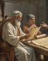

FROM PAPYRUS TO PIXELS:
THE TIMELINE OF LIGHT


300BCE:
FOUNDED BY PTOLEMY l
The library was established in the early 3rd century BCE,
during the Ptolemaic Dynasty of Egypt.
While its exact founding date is debated, it is largely credited to Ptolemy
I Soter,
who sought to create a center for Greek culture and learning in his new capital.
The Goal: The Ptolemaic kings aimed to collect "all the books in the world.
The Mousaeon: The library was part of a larger institution called the Mousaeon (Shrine of the Muses),
from which we get the modern word "museum."
It included laboratories, observatories, and botanical gardens.
STEP INSIDE THE LOST MARVEL


A QUICK TOUR:
Walkways:The buildings were connected by long, shaded marble colonnades.
Scholars were expected to walk and talk, believing that physical movement
stimulated the brain.
The Exedra: Large, semi-circular outdoor seating areas with stone benches
lectures and heated debates took place.
Private Study Cells: Small, quiet rooms where scholars could retreat to
read or write in solitude.
